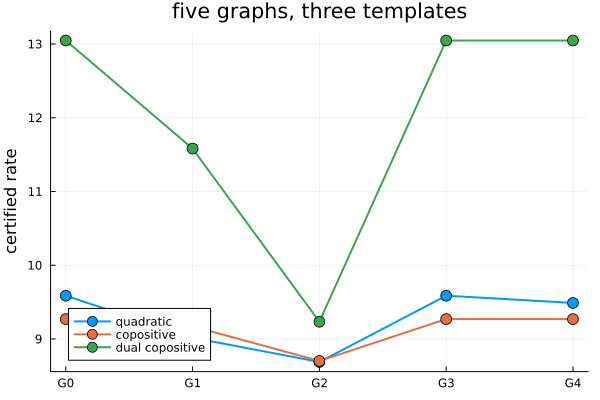

Comparing graphs: which one is better?
Two path-complete graphs and one template: is a certificate on the first guaranteed to give one on the second, whatever the system? That ordering is the question the package is built around — the graph is the object of study, not a device for a bound — and its answer depends on what the template is closed under. This example decides it on the five graphs of (Debauche et al., 2023) and its repeatability package, hands back a witness for every verdict, and confirms each with certified rates.
No exponential lift is built to decide anything. Two are built at the end, as exhibits.
import PathCompleteCertificates as PCC
import Clarabel
using HybridSystems
using Plots
const OPTIMIZER = Clarabel.OptimizerClarabel.MOIwrapper.OptimizerFive graphs on two modes
A certificate graph is a GraphAutomaton with a mode on every edge. Its nodes are numbered; the paper names them a to e, and so does everything printed below.
function graph(edges, n_nodes)
g = GraphAutomaton(n_nodes)
for (s, d, mode) in edges
add_transition!(g, s, d, mode)
end
return g
end
node_name(k) = string('a' + k - 1)
G0 = graph([(1, 1, 1), (1, 1, 2)], 1)
G1 = graph(
[
(1, 2, 1),
(2, 1, 1),
(1, 3, 1),
(3, 1, 2),
(1, 4, 2),
(4, 1, 1),
(1, 5, 2),
(5, 1, 2),
],
5,
)
G2 = graph(
[
(1, 3, 2),
(1, 4, 2),
(2, 1, 1),
(2, 2, 1),
(3, 3, 2),
(3, 4, 2),
(4, 2, 1),
(4, 1, 1),
],
4,
)
G3 = graph(
[
(1, 2, 1),
(1, 5, 2),
(1, 4, 1),
(2, 3, 1),
(2, 4, 2),
(3, 4, 1),
(3, 4, 2),
(4, 3, 2),
(4, 2, 2),
(4, 5, 1),
(5, 1, 1),
(5, 1, 2),
],
5,
)
G4 = graph(
[
(1, 2, 1),
(2, 4, 1),
(3, 2, 1),
(4, 3, 1),
(4, 5, 1),
(5, 1, 1),
(1, 4, 2),
(1, 3, 2),
(2, 1, 2),
(3, 2, 2),
(4, 5, 2),
(5, 1, 2),
],
5,
)
GRAPHS = [G0, G1, G2, G3, G4]
NAMES = ["G0", "G1", "G2", "G3", "G4"]5-element Vector{String}:
"G0"
"G1"
"G2"
"G3"
"G4"G0 is the one-node graph: a common Lyapunov function. All five read every word over the two modes, which is the soundness condition and all that a certificate on any of them needs.
all(g -> PCC.is_path_complete(g, 1:2), GRAPHS)trueThey differ in how they read them. A graph is complete when every node has an outgoing edge for every mode, co-complete when every node has an incoming one. G0, G3 and G4 are both; G1 and G2 are neither.
[
(name, PCC.is_complete(g, 1:2), PCC.is_co_complete(g, 1:2)) for
(name, g) in zip(NAMES, GRAPHS)
]5-element Vector{Tuple{String, Bool, Bool}}:
("G0", 1, 1)
("G1", 0, 0)
("G2", 0, 0)
("G3", 1, 1)
("G4", 1, 1)For every template: a map
The order that holds whatever the template is a labelled graph homomorphism ((Philippe et al., 2017)): a map from the nodes of G2 to those of G1 carrying every edge of G2 onto an edge of G1 with the same mode. Any certificate on G1, read through the map, is then one on G2. Here none exists: G2 has a self-loop and G1 has none — the paper's Example 1.
PCC.simulation(G1, G2) === nothingtrueClosed under addition: a matrix
For a template closed under addition — quadratic forms, say — a sum of node functions is a candidate too, and the paper builds a certificate on G2 from one on G1 by hand: $W_a = V_a + V_c$, $W_b = V_a + V_b$, and so on. The package writes such a construction as a nonnegative integer matrix $C$ with $W = C\,V$ and finds it by a linear program, conic_witness. The program is complete for this order: it is feasible exactly when some sum lift of G1 simulates G2 ((Debauche et al., 2023), Thm. 2). Rows are the nodes of G2, columns those of G1.
C = PCC.conic_witness(G1, G2; optimizer = OPTIMIZER)4×5 Matrix{Int64}:
1 0 1 0 0
1 1 0 0 0
1 0 0 0 1
1 0 0 1 0Read off, it is the paper's construction. The program has several solutions, and this is one of them.
combination(row) = join(
[(c == 1 ? "" : "$c·") * "V_" * node_name(g) for (g, c) in enumerate(row) if c > 0],
" + ",
)
["W_" * node_name(h) * " = " * combination(C[h, :]) for h in 1:PCC.n_nodes(G2)]4-element Vector{String}:
"W_a = V_a + V_c"
"W_b = V_a + V_b"
"W_c = V_a + V_e"
"W_d = V_a + V_d"A matrix is what you check by hand. Take a quadratic certificate on G1 for the paper's system, combine its node matrices with $C$, and every edge inequality of G2 holds at the same rate: the slack of each is nonnegative.
A = [[1.5519 0.44737; 7.6412 7.4716], [0.47501 9.1755; 1.8955 0.18502]]
system = PCC.switched_system(A)
problem = PCC.StabilityProblem(system)
QUADRATIC = PCC.QuadraticTemplate()
bound(template, g) = PCC.jsr_bound(
template,
g,
problem;
optimizer = OPTIMIZER,
rtol = 1e-6,
initial_upper = 100.0,
)
on_G1 = bound(QUADRATIC, G1)
V = PCC.functions(on_G1)
W = [
PCC.QuadraticFunction(sum(C[h, g] * Matrix(V[g]) for g in eachindex(V))) for
h in 1:PCC.n_nodes(G2)
]
scale = on_G1.rate^PCC.rate_exponent(QUADRATIC)
slacks = [
PCC.domination_slack(
QUADRATIC,
W[PCC.source(e)],
W[PCC.dest(e)],
A[PCC.label(G2, e)];
scale,
) for e in PCC.edges(G2)
]
all(>=(-1e-6), slacks)trueorder_witness is the one entry point. It reads the template's closures on the system and runs only the procedures they entitle it to — the map always, the linear program here — and names the one that answered. is_no_worse is its Boolean, in the literature's reading $G_1 \le_V G_2$: G2 is no worse than G1.
witness = PCC.order_witness(G1, G2; template = QUADRATIC, system, optimizer = OPTIMIZER)
witness.kind:additionPCC.is_no_worse(G2, G1; template = QUADRATIC, system, optimizer = OPTIMIZER)trueA graph that buys nothing
G3 has five nodes and twelve edges. For any template closed under addition it certifies nothing that the one-node graph would not: the program between G3 and G0 has a solution, a single row.
C3 = PCC.conic_witness(G3, G0; optimizer = OPTIMIZER)1×5 Matrix{Int64}:
2 1 1 2 2Whenever $V$ certifies G3, $2V_a + V_b + V_c + 2V_d + 2V_e$ is a common Lyapunov function. The paper proves this through the 8-sum lift of G3, whose nodes are the 495 multisets of eight of its nodes; the program never builds it.
G4, also five nodes and twelve edges, is different. The program has no solution, and since it is complete, nothing is a proof: no sum lift of G4 simulates G0, so for some addition-closed template and some system G4 is strictly better than a common function.
PCC.conic_witness(G4, G0; optimizer = OPTIMIZER) === nothingtrueThe same two graphs, ordered differently by the template
For a template closed under maximum, G4 cannot beat G0. It is co-complete, so the maximum of its node functions is a common Lyapunov function, and that maximum is in the template. closed_subgraph finds the largest set of nodes with this property; here it is all of them.
PCC.closed_subgraph(G4, 1:2; direction = :in)5-element Vector{Int64}:
1
2
3
4
5The dual copositive norms $\max_i x_i / v_i$ are closed under maximum, and for them order_witness decides the order between G4 and G0 in the other direction — G0 is no worse than G4 — by a relation on the dual graphs rather than by the linear program. The relation pairs the single node of G0 with every node of G4.
witness = PCC.order_witness(G4, G0; template = PCC.DualCopositiveTemplate(), system)
witness.kind, witness.data(:maximum, [[1, 2, 3, 4, 5]])simplify draws the conclusion. For that template G4 is the one-node graph; for the quadratic one, it stays as it is.
(
PCC.n_nodes(PCC.simplify(G4; template = PCC.DualCopositiveTemplate(), system)),
PCC.n_nodes(PCC.simplify(G4; template = QUADRATIC, system)),
)(1, 5)The rates agree
Every verdict above holds for every system. On the paper's system — a positive one, so the copositive templates apply too — the certified rates say the same thing. The quadratic row falls from G1 to G2, is equal on G3 and G0, and is strictly lower on G4 than on G0. The dual copositive row is equal on G0, G3 and G4, which is the collapse.
TEMPLATES = [
("quadratic", QUADRATIC),
("copositive", PCC.LinearCopositiveTemplate()),
("dual copositive", PCC.DualCopositiveTemplate()),
]
RATES =
[(name, [bound(template, g).rate for g in GRAPHS]) for (name, template) in TEMPLATES]
rows = [hcat(name, round.(rates; digits = 4)') for (name, rates) in RATES]
vcat(reshape(["template"; NAMES], 1, :), rows...)4×6 Matrix{Any}:
"template" "G0" "G1" "G2" "G3" "G4"
"quadratic" 9.5868 9.0161 8.6881 9.5868 9.4886
"copositive" 9.2696 9.1711 8.7019 9.2696 9.2696
"dual copositive" 13.048 11.5823 9.2334 13.048 13.048The primal copositive norms $c^\top x$ are not closed under minimum, yet their row collapses on G3 and G4 as well. On positive systems the min lift is valid for them without closure (Debauche, Thm. 7.43), one theorem the package records as an override of is_valid:
PCC.is_valid(PCC.MinLift(), PCC.LinearCopositiveTemplate(), system)trueDrawn, the dependence on the template is one picture: G4 sits below G0 for the quadratic template and on it for the two copositive ones, while G2 is the best of the five for all three.
figure = plot(;
xticks = (1:5, NAMES),
ylabel = "certified rate",
legend = :bottomleft,
title = "five graphs, three templates",
)
for (name, rates) in RATES
plot!(figure, 1:5, rates; marker = :circle, markersize = 6, lw = 2, label = name)
end
figure
The lifts, as exhibits
The theory speaks of lifts: the 2-sum lift of G1, whose nodes are the multisets of two of its nodes, simulates G2; the min lift of G4, whose nodes are the subsets, simulates G0. Both can be built, and they do — this is what the repeatability package prints. Nothing above needed them, which is the point: the relation and the linear program decide in polynomial time what the lifts exhibit in exponential size.
sum_lift = PCC.SumLift(2)(G1)
R_sum = PCC.simulation(PCC.graph(sum_lift), G2)
[
node_name(h) *
"₂ ↦ {" *
join(node_name.(PCC.origins(sum_lift)[R_sum[h]]) .* "₁", ", ") *
"}" for h in 1:PCC.n_nodes(G2)
]4-element Vector{String}:
"a₂ ↦ {a₁, c₁}"
"b₂ ↦ {a₁, b₁}"
"c₂ ↦ {a₁, e₁}"
"d₂ ↦ {a₁, d₁}"min_lift = PCC.MinLift()(G4)
R = PCC.simulation(PCC.graph(min_lift), G0)
"a₀ ↦ {" * join(node_name.(PCC.origins(min_lift)[R[1]]) .* "₄", ", ") * "}""a₀ ↦ {a₄, b₄, d₄, e₄}"Fifteen and thirty-one nodes, for a question the relation answered on five.
PCC.n_nodes(PCC.graph(sum_lift)), PCC.n_nodes(PCC.graph(min_lift))(15, 31)order_witness answers is this graph no worse than that one, for a template, whatever the system. refine is the other direction: start from a graph and build a better one where the certificate is tight. Lifts explains what connects them — a lift is valid for a template exactly when the lifted graph is no worse, and that is read from the same closures.
This page was generated using Literate.jl.